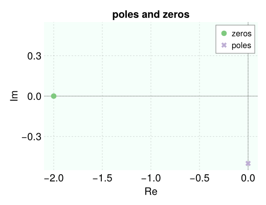
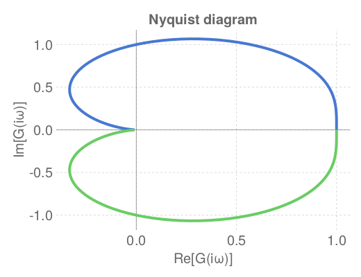
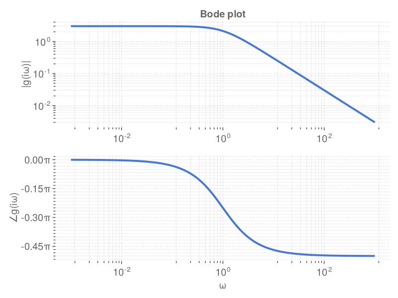
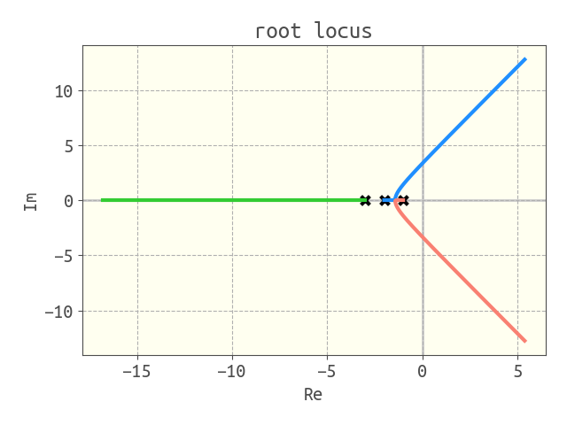

Visualization
poles and zeros of a transfer function
g = (s + 2) / (s^2 + 1/4)
viz_poles_and_zeros(g)
response of a system to an input
g = 4 / (4 * s ^ 2 + 0.8 * s + 1)
u = 1 / s
t, y = simulate(g * u, (0.0, 50.0))
viz_response(t, y, plot_title="SO underdamped step response")
Nyquist diagram
g = 1 / (s^2 + s + 1)
nyquist_diagram(g)
Bode plot
g = 3 / (s + 1)
bode_plot(g, log10_ω_min=-4.0, log10_ω_max=4.0)
Root locus plot
g_ol = 4 / (s + 3) / (s + 2) / (s + 1)
root_locus(g_ol)
hipster plot theme
we provide a hipster plot theme that you can invoke by:
using Controlz
using PyPlot
PyPlot.matplotlib.style.use(joinpath(
replace(pathof(Controlz), "src/Controlz.jl" => "src"), "hipster.mplstyle"))detailed docs
Controlz.viz_poles_and_zeros — Functionviz_poles_and_zeros(tf)plot the zeros and poles of the transfer function tf in the complex plane.
Controlz.viz_response — Functionviz_response(t, y,
plot_title="", plot_xlabel="time, t",
plot_ylabel="output, y(t)")plot y vs. t to visualize the response of a system to an input. typically t and y are outputs of simulate.
Arguments
t::Array{Float64}: array of timesy::Array{Float64}: array of values of response variables at the corresponding times int
Example
julia> g = 4 / (4 * s ^ 2 + 0.8 * s + 1)
julia> u = 1 / s
julia> t, y = simulate(g * u, (0.0, 50.0))
julia> viz_response(t, y)Controlz.nyquist_diagram — Functionnyquist_diagram(tf)plot the Nyquist diagram for a transfer function tf to visualize its frequency response.
Controlz.bode_plot — Functionbode_plot(tf, log10_ω_min=-4.0, log10_ω_max=4.0)draw the Bode plot of a transfer function tf to visualize its frequency response.
Controlz.root_locus — Functionroot_locus(g_ol)visualize the root locus plot of an open-loop transfer function g_ol.